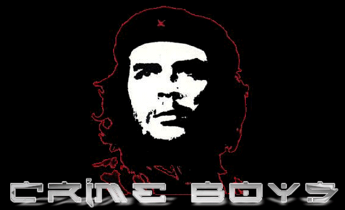

$%#@& h0h0h0... r00ted by Crime Boys!! r00ted?? no!!
Cr0wned!! HAHAHAHA &@#%$
"A inquietação não é social, é
política"
"Quando a economia vai bem, é natural que aumentem as
reivindicações"
(Essa é a leitura que FHC tem do Brasil atual - Frases
publicadas na Folha de São Paulo 21/5/2000)
_______________________________
Quando se quer a consciência limpa e tranquila recomenda-se mentir para si próprio. Querendo se manter no poder mente-se para a sociedade. Criamos então um mundo de faz-de-conta. Ele tem problemas, é claro. Mas que estão sendo efetivamente remediados. Com atitudes seguras, coerentes, com o apoio e largo sorriso de ilustres banqueiros e empresários internacionais uma nova era se apresenta. Existe sim pessoas descontentes, mas são "um grupeto" (de alguns milhões) e "são uns fascistas", afinal oposição ao novo Éden brasileiro é coisa de gente incoerente. Para se ter noção reclamam de um salário mínimo de estupendos R$151. Ora, como disse Pedro Malan, essa quantia "é mais que suficiente".
E assim vai se desenvolvendo a construção do Brasil perfeito. FHC/FMI, não há como negar, têm posto em prática um regime excelente. Para quem, já é outra história. Se não, diga-me em que outro governo os bancos lucraram tanto; o mercado internacional entrou tão facilmente; o capital privado dominou as empresas outrora públicas; a corrupção se infiltrou tão profundamente; a concentração de poder aumentou tanto;....... Fernando Henrique foi eleito, assim como Collor (Itamar como vice), para governar pela e para as elites. A ruptura nessa elite, que ocorreu com o primeiro Fernando, não se repete com este, e seu mandato continua intocável. Mas, por fora dessa redoma de vidro palaciana, existe um outro mundo.
O mundo real. Aquele em que 40% da PEA está desempregada ou sub-empregada; em que o desemprego aumenta junto com a miséria e a perda salarial; em que muitos trabalham para a riqueza de poucos; em que não existe segurança; a saúde pública é lamentável; a educação alienante e sem qualidade;....... Dois mundos diferentes, com populações distintas, com reivindicações antagônicas. No nosso mundo real, a inflação não é aquela da redoma, muito menos o desemprego e a satisfação. Vivemos num caos social, sob uma liberdade vigiada e uma ditadura civil.
Principalmente desde o dia 22 de abril as passeatas, reivindicações e protestos têm crescido pelo Brasil. É reflexo do descontentamento do povo com esse regime. É uma forma democrática de mostrar para o andar de cima que o caminho é outro. Na realidade as elites sempre fizeram uso dos meios de comunicação para dominar, para amenizar as reivindicações do povo, para reproduzir aquele mundo da redoma. Veja, FSP, Estado de SP, Organizações Globo, SBT, ..... sempre atuaram para que não se chegasse até as passeatas. A grande mídia, o Quarto Poder, sempre à serviço das elites trata de produzir cidadãos conformistas. Quando falham e o povo vais às ruas, a burguesia lança mão do agente repressor. A PM vem atuando em todas as manifestações populares de modo extremamente brusco,reprimindo um direito que é nosso. Batem, lançam bombas, atiram balas de borracha (que não matam, apagam), e assim vai. Normal, nada de novo, afinal é desse modo que a burguesia, já há décadas e mais décadas, lida com os que ameaçam o seu domínio. E FHC, Covas e cambada ainda dizem que os que vão às ruas são fascistas. É muita petulância. Fascistas são eles que destroem um monumento indígena em Coroa Vermelha, que não deixaram afrodescendentes, índios, estudantes e outros milhares se aproximarem da "festa" dos 500 anos, que não se limitam a parar as marchas, mas batem e espancam, que desqualificam todos os movimentos populares, que aplicam Lei de Segurança Nacional nos sem-terra, que comemoram 500 anos de exploração, que mentem para o povo, que sabotam o ensino público, que censuram a entrevista de Stédile em TV pública, que acabam com o SUS, que governam via Medidas Provisórias, que batem em estudantes, que produzem uma falsa impressão de estabilidade, que destinam mais de R$150bi para pagar juros de dívidas com banqueiros,....
Portanto, FHC/FMI as reivindicações não são por causa da estabilidade econômica e sim devido à instabilidade social. Não é possível enganar todos por todo o tempo. As mentiras vão se acabando junto com a escassez de desculpas. As privatizações já mostraram sua real face. A qualidade caiu e as tarifas aumentaram. A ANATEL, ANEEL, ANP, não fazem nada em defesa do povo. São um engodo, assim como esse governo que sob a máscara de democrático mostra-se ditatorial. Dizer que a inquietação é política é tentar simplificar toda uma conjuntura que é reflexo do desdém com que o neoliberalismo trata os movimentos populares e suas reivindicações.
Resumir os protestos dos servidores públicos federais que deflagraram greve, os protestos dos estudantes, dos sem-terra, do povo brasileiro a simples atos políticos em ano de eleições é ou ignorância ou má-fé. Como acredito que FHC aprendeu ao menos um pouco a fazer análise de conjuntura enquanto esteve na universidade, sobra apenas uma hipótese. A má-fé, ao sabotar o povo para enriquecer empresários. O povo está acordando.
_______________________________
Esse texto foi extraído de www.comunismo.com.br
Governo brasileiro: paciência tem limite e a do brasileiro está acabando! A nossa já acabou!
Não é porque nós estamos em uma situação "menos desfavorável" que vamos aceitar tudo e cessar nossos ataques! Enquanto o governo for podre como é, e a corrupção reinar o Brasil, nós vamos continuar!
Lutamos por um Brasil mais justo para os nossos filhos!
Greetz: MaskMaster, Psyh4ck, H0sT_L0sT, VetesGirl, M3L40, GeeFunk, sector, ex-bl0w team (always), ex-inferno.br (valeu por tudo! essa luta era nossa! contnuaremos!), zillion, safemode (visit!), #linuxbr (irc.brasnet.org) e todas pessoas que estão nos apoiando... valeu ae!
Fuckz: toda essa galera que tem inveja da gente e fica querendo nos prejudicar! Vocês sabem de quem falamos! Ah! Um foda-se com um F bem grande também pro governo brasileiro!
valeu ae pela força broadcost, xandisba, santinho e anjo! um abraço pra vocês! lutem sempre por um Brasil mais justo! Ah! Um abraço também para aquele canal lá que eu conheci o pessoal! Beijão na Nina!! :* =]
The e-mail of Crime Boys is:
Crime Boys is:
Leitão/s0laris